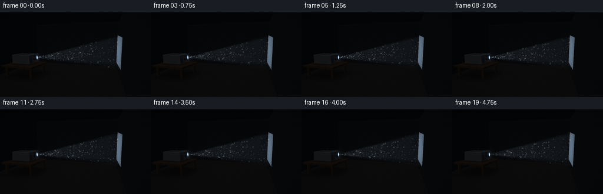
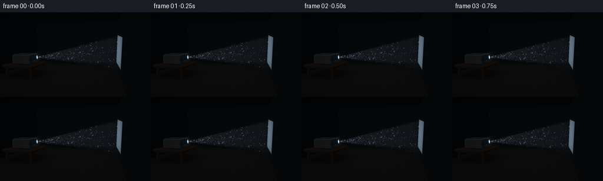

CODING AGENTS AS PIXEL WORLD MODELS
traex/GPT-6.1-Sol · phygen_055
点击播放 · 原生 RGB 像素
逐轮保存的候选
回放视频、检查图与代码变化。
每份候选均可单独播放。实际图片检查记录在下方工具轨迹中。
候选 01播放与检查图
点击播放 · 原生 RGB 像素


展开代码变化
--- 上一保存版本
+++ 本次保存版本
@@ -0,0 +1,251 @@
+"""Procedural RGB rendering: a projector in a dusty dark room.
+Uses only numpy and Pillow; all geometry, scattering and motion are analytic.
+"""
+from pathlib import Path
+import json
+import numpy as np
+from PIL import Image, ImageFilter
+import artifact_io
+
+ROOT = Path(__file__).resolve().parent
+SPEC = json.loads((ROOT / 'task_spec.json').read_text())
+W,H = SPEC['width'],SPEC['height']
+S = 3
+WW,HH = W*S,H*S
+rng = np.random.default_rng(5503)
+
+camera = np.array([2.8,2.65,8.3])
+target = np.array([.3,1.4,-.8])
+forward = target-camera; forward /= np.linalg.norm(forward)
+right = np.cross(forward,[0.,1.,0.]); right /= np.linalg.norm(right)
+up = np.cross(right,forward)
+yy,xx = np.mgrid[:HH,:WW]
+dirs = forward + ((xx+.5-WW/2)/(190*S))[...,None]*right - ((yy+.5-HH/2)/(190*S))[...,None]*up
+dirs /= np.linalg.norm(dirs,axis=-1)[...,None]
+shape=(HH,WW)
+distance=np.full(shape,np.inf)
+normal=np.zeros(shape+(3,))
+mat=np.zeros(shape,np.int16)
+
+# Room and solid objects, traced at three-times resolution.
+def surface(t, n, material, mask=None):
+ global distance,normal,mat
+ valid=(t>0)&(t<distance)&np.isfinite(t)
+ if mask is not None: valid &= mask
+ distance[valid]=t[valid]
+ normal[valid]=np.asarray(n) if np.asarray(n).ndim==1 else n[valid]
+ mat[valid]=material
+
+def plane(axis,pos,n,material):
+ t=(pos-camera[axis])/dirs[...,axis]
+ surface(t,np.array(n),material)
+
+def box(lo,hi,material):
+ lo=np.array(lo); hi=np.array(hi)
+ a=(lo-camera)/dirs; b=(hi-camera)/dirs
+ near=np.minimum(a,b); far=np.maximum(a,b)
+ t=near.max(axis=-1); end=far.min(axis=-1)
+ idx=near.argmax(axis=-1)
+ n=np.zeros_like(dirs)
+ for ax in range(3):
+ n[...,ax]=np.where(idx==ax,-np.sign(dirs[...,ax]),0)
+ surface(t,n,material,end>=np.maximum(t,0))
+
+plane(1,0,[0,1,0],1)
+plane(0,3.8,[-1,0,0],2)
+plane(2,-3.2,[0,0,1],3)
+plane(0,-5,[1,0,0],3)
+plane(1,4.4,[0,-1,0],3)
+# Low table, not a floating projector.
+box([-4.3,.72,.15],[-1.85,.86,2.2],4)
+for tx in [-4.08,-2.08]:
+ for tz in [.36,1.98]:
+ box([tx-.07,0,tz-.07],[tx+.07,.73,tz+.07],4)
+# Dark modern projector with a softly bevelled visual finish.
+box([-3.90,.91,.46],[-2.45,1.55,1.62],5)
+box([-3.84,.88,.50],[-2.50,.94,1.57],6)
+for tx in [-3.65,-2.65]:
+ for tz in [.67,1.39]:
+ box([tx-.07,.86,tz-.07],[tx+.07,.915,tz+.07],6)
+# Top air vents and front grille, modelled instead of painted on top of the beam.
+for k in range(11):
+ x=-3.65+k*.076
+ box([x,1.551,.64],[x+.026,1.555,1.23],6)
+for k in range(7):
+ y=1.015+k*.054
+ box([-2.448,y,1.29],[-2.442,y+.018,1.52],6)
+box([-3.62,1.552,1.37],[-3.18,1.57,1.49],7)
+box([-3.05,1.557,1.402],[-3.01,1.567,1.441],8)
+
+axis=np.array([1,.07,-.343]);axis/=np.linalg.norm(axis)
+u=np.cross([0.,1.,0.],axis);u/=np.linalg.norm(u)
+v=np.cross(axis,u)
+barrel=np.array([-2.48,1.30,1.00])
+source=barrel+axis*.23
+screen_s=(3.8-source[0])/axis[0]
+ku,kv=.245,.180
+
+def cylinder(start,ax,length,radius,material):
+ rel=camera-start
+ dz=dirs@ax; oz=rel@ax
+ dper=dirs-dz[...,None]*ax
+ oper=rel-oz*ax
+ aa=np.sum(dper*dper,axis=-1)
+ bb=2*np.sum(dper*oper,axis=-1)
+ cc=np.dot(oper,oper)-radius**2
+ disc=bb**2-4*aa*cc
+ root=np.sqrt(np.maximum(0,disc))
+ t=(-bb-root)/(2*aa)
+ z=oz+t*dz
+ p=camera+t[...,None]*dirs
+ nn=(p-start-z[...,None]*ax)/radius
+ surface(t,nn,material,(disc>=0)&(z>=0)&(z<=length))
+ t=(length-oz)/dz
+ pp=camera+t[...,None]*dirs-(start+ax*length)
+ surface(t,ax,material,np.sum(pp*pp,axis=-1)<=radius**2)
+
+cylinder(barrel,axis,.215,.205,6)
+cylinder(barrel+axis*.208,axis,.023,.181,9)
+cylinder(barrel+axis*.233,axis,.003,.143,10)
+
+P=camera+distance[...,None]*dirs
+N=normal
+# Wall and floor texture: low contrast, never a featureless black background.
+noise=rng.normal(0,1,shape)
+ambient=np.maximum(0,N@np.array([-.12,.86,.43]))
+base=np.zeros(shape+(3,))
+colors={1:[13,12,12],2:[15,17,20],3:[9,11,14],4:[22,16,12],5:[30,33,36],6:[7,9,11],7:[17,20,22],8:[7,50,44],9:[30,34,39],10:[145,190,224]}
+for material,color in colors.items():
+ mask=mat==material
+ shade=(.42+.58*ambient)
+ base[mask]=np.array(color)*shade[mask,None]
+# Faint plaster grain.
+wall=(mat==2)|(mat==3)
+plaster=noise*.48+np.sin(P[...,1]*27+np.sin(P[...,2]*9))*.25
+base[wall]+=plaster[wall,None]
+# Floorboards and table grain, perspective-correct.
+wood=(mat==1)|(mat==4)
+graining=(np.sin(P[...,0]*51+np.sin(P[...,2]*2.2)*1.8)*.60+np.sin(P[...,0]*149+P[...,2]*.8)*.20)
+base[wood]+=graining[wood,None]*np.array([1.6,1.1,.7])
+seams=np.exp(-(np.sin(P[...,0]*np.pi/.46)/.034)**2)
+base[mat==1]*=(1-.22*seams[mat==1,None])
+# Contact shadows on the table and underneath it.
+shadow=np.exp(-((P[...,0]+3.15)/1.05)**6-((P[...,2]-1.02)/.83)**6)
+base[mat==4]*=(1-.36*shadow[mat==4,None])
+fshadow=np.exp(-((P[...,0]+3.08)/1.42)**4-((P[...,2]-1.17)/1.2)**4)
+base[mat==1]*=(1-.48*fshadow[mat==1,None])
+# Delicate edge catching on the instrument housing.
+body=mat==5
+edge=np.minimum.reduce([np.abs(P[...,0]+3.90),np.abs(P[...,0]+2.45),np.abs(P[...,1]-.91),np.abs(P[...,1]-1.55),np.abs(P[...,2]-.46),np.abs(P[...,2]-1.62)])
+# Two surface coordinates must be near an edge for a glancing highlight.
+edge2=np.sort(np.stack([np.minimum(abs(P[...,0]+3.90),abs(P[...,0]+2.45)),np.minimum(abs(P[...,1]-.91),abs(P[...,1]-1.55)),np.minimum(abs(P[...,2]-.46),abs(P[...,2]-1.62))],-1),axis=-1)[...,1]
+base[body]+=np.exp(-edge2[body,None]/.012)*np.array([8,9,10])
+# A neutral blank projection, with realistic softness on the wall, not a graphic overlay.
+rel=P-source
+ps=rel@axis; pu=rel@u; pv=rel@v
+half_u=.075+ku*np.maximum(ps,0);half_v=.048+kv*np.maximum(ps,0)
+soft=lambda q: np.clip(q,0,1)**2*(3-2*np.clip(q,0,1))
+coverage=soft((half_u-abs(pu))/.060)*soft((half_v-abs(pv))/.055)
+projected=(mat==2)&(ps>0)
+illum=coverage*(1-.15*(pu/np.maximum(half_u,.1))**2-.12*(pv/np.maximum(half_v,.1))**2)
+base[projected]+=illum[projected,None]*np.array([89,105,120])
+# Lens glass: concentric optics visible in its white-blue emitting front.
+lens=mat==10
+radius=np.sqrt(pu**2+pv**2)
+base[lens]=np.array([125,170,210])+np.exp(-(radius[lens,None]/.08)**2)*np.array([110,85,45])
+base[mat==9]+=np.array([8,12,18])
+
+# Integrate single scattering through the expanding rectangular light frustum.
+# Static density plus a slow pair of low-amplitude, advected density waves.
+steps=76
+volume=np.zeros(shape,np.float32)
+wave_c=np.zeros(shape,np.float32);wave_s=np.zeros(shape,np.float32)
+# Only ray-march up to first solid surface; projector occludes its own light.
+for j in range(steps):
+ t=distance*(j+.5)/steps
+ q=camera+t[...,None]*dirs-source
+ s=q@axis;a=q@u;b=q@v
+ hu=.068+ku*np.maximum(s,0);hv=.045+kv*np.maximum(s,0)
+ inside=(s>0)&(s<screen_s+.25)
+ c=soft((hu-abs(a))/.026)*soft((hv-abs(b))/.023)*inside
+ # Bright scattering near the source gradually dilutes with beam expansion.
+ irradiance=17.0/(.52+.25*np.maximum(s,0))**2
+ # Very weak optical irregularities make the light organic, not a flat triangle.
+ raytexture=1+.065*np.sin(a/np.maximum(s,.3)*81)+.025*np.sin(b/np.maximum(s,.3)*135)
+ density=(1+.055*np.sin(s*2.7+a*3.3+b*2.4))
+ contribution=c*irradiance*raytexture*density*distance/steps
+ phase=s*2.2+a*4.0+b*3.4
+ volume+=contribution
+ wave_c+=contribution*np.cos(phase)*.047
+ wave_s+=contribution*np.sin(phase)*.047
+
+# Camera-facing drifting dust particles, with real 3D frustum membership and occlusion.
+num=1000
+s0=rng.uniform(.12,screen_s,num)
+a0=rng.uniform(-1.20,1.20,num)*(.068+ku*s0)
+b0=rng.uniform(-1.15,1.15,num)*(.045+kv*s0)
+phase=rng.uniform(0,2*np.pi,num)
+vel=rng.uniform(.022,.064,num)
+sizes=rng.choice([.12,.18,.24,.34,.48,.66],num,p=[.30,.30,.21,.12,.05,.02])
+brightness=rng.uniform(.5,1.1,num)
+
+def project(q):
+ d=q-camera;z=d@forward
+ x=WW/2+190*S*(d@right)/z
+ y=HH/2-190*S*(d@up)/z
+ return x,y,z
+
+def dust_layer(time):
+ pts=source+(s0+.028*np.sin(time*.6+phase))[:,None]*axis+(a0+.026*np.sin(time*.8+phase))[:,None]*u+(b0-vel*time+.035*np.sin(time*.75+phase))[:,None]*v
+ rel=pts-source;ss=rel@axis;aa=rel@u;bb=rel@v
+ hu=.068+ku*ss;hv=.045+kv*ss
+ ins=soft((hu-abs(aa))/.05)*soft((hv-abs(bb))/.05)
+ px,py,z=project(pts)
+ out=np.zeros(shape,np.float32)
+ # Fine grains with continuously drifting subpixel profiles. No strobing.
+ for i in range(num):
+ if ins[i]<.01 or z[i]<=0:continue
+ x,y=px[i],py[i]
+ if not (3<x<WW-3 and 3<y<HH-3):continue
+ ix,iy=int(x),int(y)
+ d=np.linalg.norm(pts[i]-camera)
+ if d>distance[iy,ix]+.01:continue
+ sig=max(.34,sizes[i]*S*8.5/z[i])
+ rr=int(np.ceil(sig*3))
+ x0=max(0,ix-rr);x1=min(WW,ix+rr+2)
+ y0=max(0,iy-rr);y1=min(HH,iy+rr+2)
+ gx,gy=np.meshgrid(np.arange(x0,x1)+.5,np.arange(y0,y1)+.5)
+ profile=np.exp(-((gx-x)**2+(gy-y)**2)/(2*sig*sig))
+ light=ins[i]*(38+82/(.8+ss[i]*.22))*brightness[i]
+ # A slow variation from tumbling grains; never random flicker.
+ light*=.84+.16*np.sin(phase[i]+time*.8)
+ out[y0:y1,x0:x1]+=profile*light
+ return out
+
+# Subtle bloom from the lens and the beam, continuous film-like exposure.
+srcx,srcy,_=project(source[None,:])
+srcx,srcy=srcx[0],srcy[0]
+r2=(xx-srcx)**2+(yy-srcy)**2
+lensglow=16*np.exp(-r2/(2*(4.4*S)**2))+28*np.exp(-r2/(2*(1.15*S)**2))
+# A restrained optical horizontal halo near the lamp, not a starburst.
+lensglow+=5*np.exp(-(yy-srcy)**2/(2*(.52*S)**2)-(xx-srcx)**2/(2*(13*S)**2))
+vignette=np.clip(1-.22*((xx-WW*.51)/(WW*.71))**2-.18*((yy-HH*.50)/(HH*.8))**2,.60,1)
+frames=[]
+for frame in range(SPEC['frames']):
+ time=frame/SPEC['fps']
+ fog=volume+wave_c*np.cos(time*.55)+wave_s*np.sin(time*.55)
+ rgb=base+fog[...,None]*np.array([.75,.87,1.])
+ grains=dust_layer(time)
+ rgb+=grains[...,None]*np.array([.87,.95,1.])
+ rgb+=lensglow[...,None]*np.array([.76,.88,1.])
+ rgb*=vignette[...,None]
+ # Bloom only the genuinely luminous optics, screen and bright dust.
+ highlights=np.clip(rgb-95,0,255)
+ bloom=np.asarray(Image.fromarray(np.uint8(np.clip(highlights,0,255))).filter(ImageFilter.GaussianBlur(2.4*S)),dtype=float)
+ rgb+=bloom*.13
+ rgb+=noise[...,None]*.27
+ image=Image.fromarray(np.uint8(np.clip(rgb,0,255))).resize((W,H),Image.Resampling.LANCZOS)
+ frames.append(np.asarray(image))
+frames=np.stack(frames).astype(np.uint8)
+artifact_io.save(frames,ROOT)
+print('Saved',frames.shape,'RGB frames. Range:',frames.min(),frames.max())
可观测工具轨迹
实际执行的命令与返回图片。
命令 1exit 0
/bin/bash -lc 'ls -la; cat prompt.txt; cat GENERATION_RULES.md; cat task_spec.json'
命令 2exit 0
/bin/bash -lc "cat artifact_io.py; python - <<'PY'
import numpy, PIL
print('ready')
PY"命令 3exit 0
/bin/bash -lc "python - <<'PY' import numpy as np cam=np.array([2.8,2.65,8.3]); target=np.array([.1,1.25,-.8]); f=(target-cam); f/=np.linalg.norm(f); r=np.cross(f,[0,1,0]);r/=np.linalg.norm(r);u=np.cross(r,f) for p in [[-2.8,1.1,-.5],[3.8,1.7,-1.4],[-3.2,.5,0],[3.8,2.5,-1.4],[3.8,.9,-1.4]]: d=np.array(p)-cam; z=d@f; print(p,128+190*(d@r)/z,72-190*(d@u)/z) PY"
命令 4exit 0
/bin/bash -lc "python - <<'PY' import numpy as np cam=np.array([2.8,2.65,8.3]); target=np.array([.3,1.4,-.8]); f=(target-cam); f/=np.linalg.norm(f); r=np.cross(f,[0,1,0]);r/=np.linalg.norm(r);u=np.cross(r,f) for p in [[-2.45,1.2,1],[-3.9,1,1.65],[-3.9,1,.25],[3.8,1.75,-1.1],[3.8,2.55,-1.1],[3.8,.95,-1.1],[-2.45,1.36,1]]: d=np.array(p)-cam; z=d@f; print(p,128+190*(d@r)/z,72-190*(d@u)/z) PY"
命令 5exit 0
/bin/bash -lc "cat > generate.py <<'PY'
\"\"\"Procedural RGB rendering: a projector in a dusty dark room.
Uses only numpy and Pillow; all geometry, scattering and motion are analytic.
\"\"\"
from pathlib import Path
import json
import numpy as np
from PIL import Image, ImageFilter
import artifact_io
ROOT = Path(__file__).resolve().parent
SPEC = json.loads((ROOT / 'task_spec.json').read_text())
W,H = SPEC['width'],SPEC['height']
S = 3
WW,HH = W*S,H*S
rng = np.random.default_rng(5503)
camera = np.array([2.8,2.65,8.3])
target = np.array([.3,1.4,-.8])
forward = target-camera; forward /= np.linalg.norm(forward)
right = np.cross(forward,[0.,1.,0.]); right /= np.linalg.norm(right)
up = np.cross(right,forward)
yy,xx = np.mgrid[:HH,:WW]
dirs = forward + ((xx+.5-WW/2)/(190*S))[...,None]*right - ((yy+.5-HH/2)/(190*S))[...,None]*up
dirs /= np.linalg.norm(dirs,axis=-1)[...,None]
shape=(HH,WW)
distance=np.full(shape,np.inf)
normal=np.zeros(shape+(3,))
mat=np.zeros(shape,np.int16)
# Room and solid objects, traced at three-times resolution.
def surface(t, n, material, mask=None):
global distance,normal,mat
valid=(t>0)&(t<distance)&np.isfinite(t)
if mask is not None: valid &= mask
distance[valid]=t[valid]
normal[valid]=np.asarray(n) if np.asarray(n).ndim==1 else n[valid]
mat[valid]=material
def plane(axis,pos,n,material):
t=(pos-camera[axis])/dirs[...,axis]
surface(t,np.array(n),material)
def box(lo,hi,material):
lo=np.array(lo); hi=np.array(hi)
a=(lo-camera)/dirs; b=(hi-camera)/dirs
near=np.minimum(a,b); far=np.maximum(a,b)
t=near.max(axis=-1); end=far.min(axis=-1)
idx=near.argmax(axis=-1)
n=np.zeros_like(dirs)
for ax in range(3):
n[...,ax]=np.where(idx==ax,-np.sign(dirs[...,ax]),0)
surface(t,n,material,end>=np.maximum(t,0))
plane(1,0,[0,1,0],1)
plane(0,3.8,[-1,0,0],2)
plane(2,-3.2,[0,0,1],3)
plane(0,-5,[1,0,0],3)
plane(1,4.4,[0,-1,0],3)
# Low table, not a floating projector.
box([-4.3,.72,.15],[-1.85,.86,2.2],4)
for tx in [-4.08,-2.08]:
for tz in [.36,1.98]:
box([tx-.07,0,tz-.07],[tx+.07,.73,tz+.07],4)
# Dark modern projector with a softly bevelled visual finish.
box([-3.90,.91,.46],[-2.45,1.55,1.62],5)
box([-3.84,.88,.50],[-2.50,.94,1.57],6)
for tx in [-3.65,-2.65]:
for tz in [.67,1.39]:
box([tx-.07,.86,tz-.07],[tx+.07,.915,tz+.07],6)
# Top air vents and front grille, modelled instead of painted on top of the beam.
for k in range(11):
x=-3.65+k*.076
box([x,1.551,.64],[x+.026,1.555,1.23],6)
for k in range(7):
y=1.015+k*.054
box([-2.448,y,1.29],[-2.442,y+.018,1.52],6)
box([-3.62,1.552,1.37],[-3.18,1.57,1.49],7)
box([-3.05,1.557,1.402],[-3.01,1.567,1.441],8)
axis=np.array([1,.07,-.343]);axis/=np.linalg.norm(axis)
u=np.cross([0.,1.,0.],axis);u/=np.linalg.norm(u)
v=np.cross(axis,u)
barrel=np.array([-2.48,1.30,1.00])
source=barrel+axis*.23
screen_s=(3.8-source[0])/axis[0]
ku,kv=.245,.180
def cylinder(start,ax,length,radius,material):
rel=camera-start
dz=dirs@ax; oz=rel@ax
dper=dirs-dz[...,None]*ax
oper=rel-oz*ax
aa=np.sum(dper*dper,axis=-1)
bb=2*np.sum(dper*oper,axis=-1)
cc=np.dot(oper,oper)-radius**2
disc=bb**2-4*aa*cc
root=np.sqrt(np.maximum(0,disc))
t=(-bb-root)/(2*aa)
z=oz+t*dz
p=camera+t[...,None]*dirs
nn=(p-start-z[...,None]*ax)/radius
surface(t,nn,material,(disc>=0)&(z>=0)&(z<=length))
t=(length-oz)/dz
pp=camera+t[...,None]*dirs-(start+ax*length)
surface(t,ax,material,np.sum(pp*pp,axis=-1)<=radius**2)
cylinder(barrel,axis,.215,.205,6)
cylinder(barrel+axis*.208,axis,.023,.181,9)
cylinder(barrel+axis*.233,axis,.003,.143,10)
P=camera+distance[...,None]*dirs
N=normal
# Wall and floor texture: low contrast, never a featureless black background.
noise=rng.normal(0,1,shape)
ambient=np.maximum(0,N@np.array([-.12,.86,.43]))
base=np.zeros(shape+(3,))
colors={1:[13,12,12],2:[15,17,20],3:[9,11,14],4:[22,16,12],5:[30,33,36],6:[7,9,11],7:[17,20,22],8:[7,50,44],9:[30,34,39],10:[145,190,224]}
for material,color in colors.items():
mask=mat==material
shade=(.42+.58*ambient)
base[mask]=np.array(color)*shade[mask,None]
# Faint plaster grain.
wall=(mat==2)|(mat==3)
plaster=noise*.48+np.sin(P[...,1]*27+np.sin(P[...,2]*9))*.25
base[wall]+=plaster[wall,None]
# Floorboards and table grain, perspective-correct.
wood=(mat==1)|(mat==4)
graining=(np.sin(P[...,0]*51+np.sin(P[...,2]*2.2)*1.8)*.60+np.sin(P[...,0]*149+P[...,2]*.8)*.20)
base[wood]+=graining[wood,None]*np.array([1.6,1.1,.7])
seams=np.exp(-(np.sin(P[...,0]*np.pi/.46)/.034)**2)
base[mat==1]*=(1-.22*seams[mat==1,None])
# Contact shadows on the table and underneath it.
shadow=np.exp(-((P[...,0]+3.15)/1.05)**6-((P[...,2]-1.02)/.83)**6)
base[mat==4]*=(1-.36*shadow[mat==4,None])
fshadow=np.exp(-((P[...,0]+3.08)/1.42)**4-((P[...,2]-1.17)/1.2)**4)
base[mat==1]*=(1-.48*fshadow[mat==1,None])
# Delicate edge catching on the instrument housing.
body=mat==5
edge=np.minimum.reduce([np.abs(P[...,0]+3.90),np.abs(P[...,0]+2.45),np.abs(P[...,1]-.91),np.abs(P[...,1]-1.55),np.abs(P[...,2]-.46),np.abs(P[...,2]-1.62)])
# Two surface coordinates must be near an edge for a glancing highlight.
edge2=np.sort(np.stack([np.minimum(abs(P[...,0]+3.90),abs(P[...,0]+2.45)),np.minimum(abs(P[...,1]-.91),abs(P[...,1]-1.55)),np.minimum(abs(P[...,2]-.46),abs(P[...,2]-1.62))],-1),axis=-1)[...,1]
base[body]+=np.exp(-edge2[body,None]/.012)*np.array([8,9,10])
# A neutral blank projection, with realistic softness on the wall, not a graphic overlay.
rel=P-source
ps=rel@axis; pu=rel@u; pv=rel@v
half_u=.075+ku*np.maximum(ps,0);half_v=.048+kv*np.maximum(ps,0)
soft=lambda q: np.clip(q,0,1)**2*(3-2*np.clip(q,0,1))
coverage=soft((half_u-abs(pu))/.060)*soft((half_v-abs(pv))/.055)
projected=(mat==2)&(ps>0)
illum=coverage*(1-.15*(pu/np.maximum(half_u,.1))**2-.12*(pv/np.maximum(half_v,.1))**2)
base[projected]+=illum[projected,None]*np.array([89,105,120])
# Lens glass: concentric optics visible in its white-blue emitting front.
lens=mat==10
radius=np.sqrt(pu**2+pv**2)
base[lens]=np.array([125,170,210])+np.exp(-(radius[lens,None]/.08)**2)*np.array([110,85,45])
base[mat==9]+=np.array([8,12,18])
# Integrate single scattering through the expanding rectangular light frustum.
# Static density plus a slow pair of low-amplitude, advected density waves.
steps=76
volume=np.zeros(shape,np.float32)
wave_c=np.zeros(shape,np.float32);wave_s=np.zeros(shape,np.float32)
# Only ray-march up to first solid surface; projector occludes its own light.
for j in range(steps):
t=distance*(j+.5)/steps
q=camera+t[...,None]*dirs-source
s=q@axis;a=q@u;b=q@v
hu=.068+ku*np.maximum(s,0);hv=.045+kv*np.maximum(s,0)
inside=(s>0)&(s<screen_s+.25)
c=soft((hu-abs(a))/.026)*soft((hv-abs(b))/.023)*inside
# Bright scattering near the source gradually dilutes with beam expansion.
irradiance=17.0/(.52+.25*np.maximum(s,0))**2
# Very weak optical irregularities make the light organic, not a flat triangle.
raytexture=1+.065*np.sin(a/np.maximum(s,.3)*81)+.025*np.sin(b/np.maximum(s,.3)*135)
density=(1+.055*np.sin(s*2.7+a*3.3+b*2.4))
contribution=c*irradiance*raytexture*density*distance/steps
phase=s*2.2+a*4.0+b*3.4
volume+=contribution
wave_c+=contribution*np.cos(phase)*.047
wave_s+=contribution*np.sin(phase)*.047
# Camera-facing drifting dust particles, with real 3D frustum membership and occlusion.
num=1000
s0=rng.uniform(.12,screen_s,num)
a0=rng.uniform(-1.20,1.20,num)*(.068+ku*s0)
b0=rng.uniform(-1.15,1.15,num)*(.045+kv*s0)
phase=rng.uniform(0,2*np.pi,num)
vel=rng.uniform(.022,.064,num)
sizes=rng.choice([.12,.18,.24,.34,.48,.66],num,p=[.30,.30,.21,.12,.05,.02])
brightness=rng.uniform(.5,1.1,num)
def project(q):
d=q-camera;z=d@forward
x=WW/2+190*S*(d@right)/z
y=HH/2-190*S*(d@up)/z
return x,y,z
def dust_layer(time):
pts=source+(s0+.028*np.sin(time*.6+phase))[:,None]*axis+(a0+.026*np.sin(time*.8+phase))[:,None]*u+(b0-vel*time+.035*np.sin(time*.75+phase))[:,None]*v
rel=pts-source;ss=rel@axis;aa=rel@u;bb=rel@v
hu=.068+ku*ss;hv=.045+kv*ss
ins=soft((hu-abs(aa))/.05)*soft((hv-abs(bb))/.05)
px,py,z=project(pts)
out=np.zeros(shape,np.float32)
# Fine grains with continuously drifting subpixel profiles. No strobing.
for i in range(num):
if ins[i]<.01 or z[i]<=0:continue
x,y=px[i],py[i]
if not (3<x<WW-3 and 3<y<HH-3):continue
ix,iy=int(x),int(y)
d=np.linalg.norm(pts[i]-camera)
if d>distance[iy,ix]+.01:continue
sig=max(.34,sizes[i]*S*8.5/z[i])
rr=int(np.ceil(sig*3))
x0=max(0,ix-rr);x1=min(WW,ix+rr+2)
y0=max(0,iy-rr);y1=min(HH,iy+rr+2)
gx,gy=np.meshgrid(np.arange(x0,x1)+.5,np.arange(y0,y1)+.5)
profile=np.exp(-((gx-x)**2+(gy-y)**2)/(2*sig*sig))
light=ins[i]*(38+82/(.8+ss[i]*.22))*brightness[i]
# A slow variation from tumbling grains; never random flicker.
light*=.84+.16*np.sin(phase[i]+time*.8)
out[y0:y1,x0:x1]+=profile*light
return out
# Subtle bloom from the lens and the beam, continuous film-like exposure.
srcx,srcy,_=project(source[None,:])
srcx,srcy=srcx[0],srcy[0]
r2=(xx-srcx)**2+(yy-srcy)**2
lensglow=16*np.exp(-r2/(2*(4.4*S)**2))+28*np.exp(-r2/(2*(1.15*S)**2))
# A restrained optical horizontal halo near the lamp, not a starburst.
lensglow+=5*np.exp(-(yy-srcy)**2/(2*(.52*S)**2)-(xx-srcx)**2/(2*(13*S)**2))
vignette=np.clip(1-.22*((xx-WW*.51)/(WW*.71))**2-.18*((yy-HH*.50)/(HH*.8))**2,.60,1)
frames=[]
for frame in range(SPEC['frames']):
time=frame/SPEC['fps']
fog=volume+wave_c*np.cos(time*.55)+wave_s*np.sin(time*.55)
rgb=base+fog[...,None]*np.array([.75,.87,1.])
grains=dust_layer(time)
rgb+=grains[...,None]*np.array([.87,.95,1.])
rgb+=lensglow[...,None]*np.array([.76,.88,1.])
rgb*=vignette[...,None]
# Bloom only the genuinely luminous optics, screen and bright dust.
highlights=np.clip(rgb-95,0,255)
bloom=np.asarray(Image.fromarray(np.uint8(np.clip(highlights,0,255))).filter(ImageFilter.GaussianBlur(2.4*S)),dtype=float)
rgb+=bloom*.13
rgb+=noise[...,None]*.27
image=Image.fromarray(np.uint8(np.clip(rgb,0,255))).resize((W,H),Image.Resampling.LANCZOS)
frames.append(np.asarray(image))
frames=np.stack(frames).astype(np.uint8)
artifact_io.save(frames,ROOT)
print('Saved',frames.shape,'RGB frames. Range:',frames.min(),frames.max())
PY
python generate.py"命令 6exit 0
/bin/bash -lc "python - <<'PY'
from pathlib import Path
import numpy as np
p=Path('.')
z=np.load('pixels.npz')['pixels']
print('Tensor shape:',z.shape)
print('PNG frames:',len(list((p/'frames').glob('*.png'))))
print('Player exists:',(p/'index.html').is_file())
print('Mean absolute RGB temporal change:',np.abs(np.diff(np.stack([((z>>16)&255),((z>>8)&255),(z&255)],axis=-1).astype(float),axis=2)).mean())
PY
command -v ffmpeg || true"保存候选 1 份；完成命令 6 次；可验证图片返回 0 张。原始 API 响应与完整日志保留在本地。